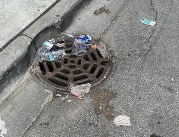

On average, a person generates 5lbs of waste per day (EPA) . While that doesn’t sound like a significant amount, it adds up over time and contributes to large landfills full of “forever” garbage. You might ask yourself “who cares?”, but this is a major problem for the environment and our futures.
This is what drove me to start my project, “Back to your Roots”. The hope behind this project is to raise awareness towards how wasteful we are as humans and to highlight the importance of looking at alternative methods of waste management.
The name is meant to have two meanings. The first being to go back and reflect on when you acquired the item, what it was used for, and why and how you are getting rid of it. The second being the idea of the trash going back to the Earth.
I started this project a few weeks ago, and I already feel like I am being more conscious about what I am throwing out. I am making sure that I use up all of the products to the best of my ability before I throw them away.
By documenting each item, and writing about where I got them from, I feel like I am much more aware of what I am throwing away. I ask myself, “is this necessary to throw away? Can I recycle this item? Can I give this to someone else?” I feel like in a society where we are so quick to move on to the next fad or thing, it really grounds me.
I have been deeply inspired by a few prominent people in the “trash” field. The first is Sarah Newman, who argues that the idea of “trash” is a relatively new idea. Past societies made use of any “waste” citing examples of using latrine waste as fertilizer.
Similarly, Vik Muniz takes waste from landfills and arranges them into large scale portraits to shift the way that people see art and garbage. He has even recruited some garbage disposal workers in making his art.
I also was inspired by Claudia von Mallinckrodt who goes around rich neighborhoods and salvages valuable items that were quickly discarded. These three people have worked hard to change the narrative about trash. I hope to be able to do the same.
My project is a culmination of these ideas in order to document my trash. I want to memorialize the memories that I have made with each of these items as well as raise awareness to both myself and others of the importance of being aware of what you throw out. I hope to inspire others to do the same.
Hi, my name is Amethyst Green Malex, and I major in sustainable waste at Rutgers University. I am interested in creating a more sustainable planet. Green is my middle name…literally! I started this project in hopes of making me more aware of what trash I am throwing out. Perhaps if I am more conscious about my waste, I can try to use alternative methods of disposal such as giving items away or recycling!
In my free time, I volunteer at my local community garden where I am a large advocate for composting and reusing manure as a form of fertilization. You can also find me at the Greener Planet club where I am the Vice President. If you are interested in my work or want to talk more about greener solutions to waste management, feel free to reach out. Below are my socials. I look forward to meeting you. As always, stay green!